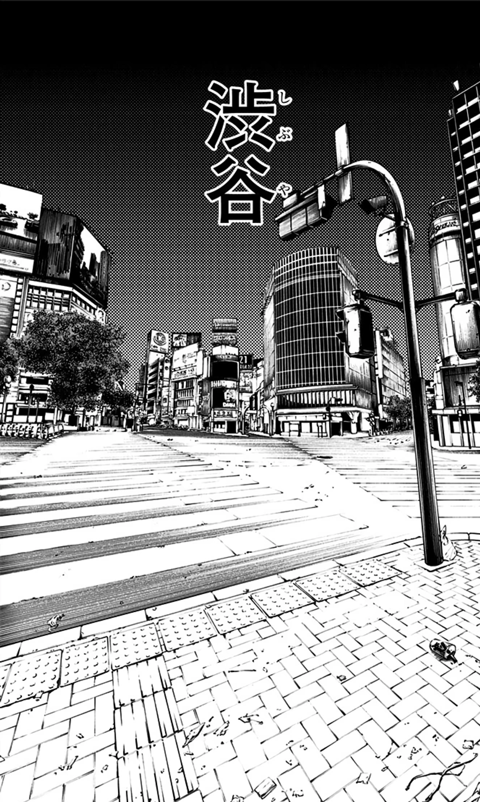

A fan-made archive of the mechanics, people and turning points that define modern jujutsu. Built like an art-directed case file, not a wiki wearing a glow effect.
Every technique sits inside a web of conditions: con[...]